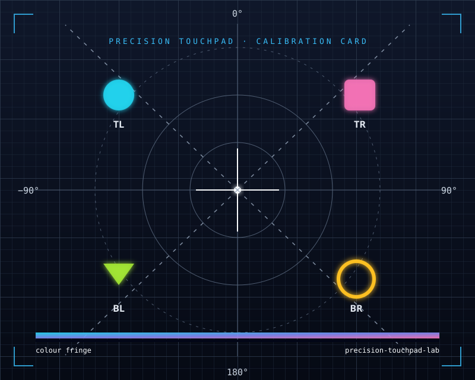

Windows 触控板素质测试台 · 捏合 / 旋转 / 压力 / 轨迹 · 对标 MacBook Pro

+/- 缩放 · [/] 旋转 · R 重置 · F 全屏；也可以按住 Ctrl 滚动滚轮做缩放。
如果触控板不是精准触控板（Precision Touchpad），浏览器通常只能拿到「鼠标 + 滚轮」信号，捏合与旋转不会生效，本页会给出对应判定。 旧款 Synaptics / ELAN 驱动可尝试在其控制面板中开启「精准触控板」兼容模式。
综合评分由六项加权得出：精准信号、手势覆盖、轨迹连续、采样率、多点触控、压力分层；没测到的项不参与计算，页面会显示「已测 N/6」。 每一项都取本次测试里的最好成绩，所以分数只会升、不会来回跳动；想重新开始点「重新测试」。 「对标苹果」把各项最好成绩与 MacBook Pro 触控板的参考基线逐项比较，差距最大的两项会写进结论。
顶部四个色块是什么：那是「浏览器能力检测」，不参与评分，只说明当前浏览器能不能拿到对应的输入能力。 绿 支持 红 不支持 —— 指针事件是测触控板的前提；触摸事件显示系统报告的最大触点数，触控板测试不依赖它；手势事件是旧版 WebKit 的东西，Windows 上红着完全正常；WebHID 仅作参考。